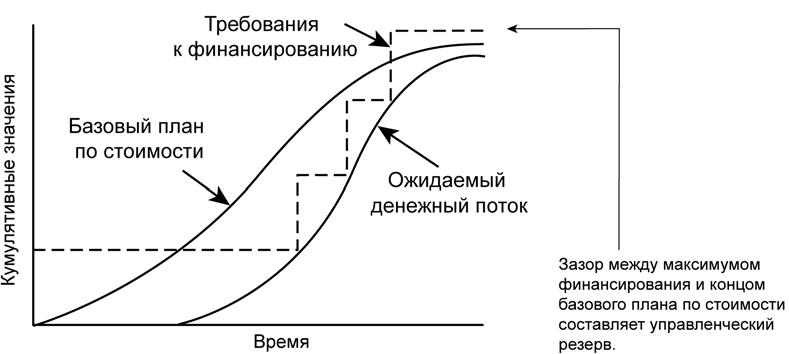

Разработка бюджета расходов (п.7.2, рис.10.1)
Разработка бюджета расходов включает в себя объединение оценок стоимости отдельных плановых операций или пакетов работ с целью создания общего базового плана по стоимости для определения эффективности исполнения проекта. В описании содержания проекта приводится сводный бюджет. Однако прежде чем приступить к разработке подробных бюджетных запросов и авторизации работ, необходимо подготовить стоимостную оценку плановых операций или пакетов работ.
7.2.1 Разработка бюджета расходов: входы
7.2.1.1 Описание содержания проекта. Формальные периодические ограничения на расходование средств, предусмотренных в проекте, могут быть изложены в Уставе проекта или в контракте. Эти ограничения по расходованию средств отражаются в описании содержания проекта и в рамках сметы расходов могут быть предметом ежегодного подтверждения со стороны организации-покупателя или иных структур, например, правительственных органов.
7.2.1.2 Иерархическая структура работ определяет взаимоотношения между всеми элементами проекта и результатами поставки проекта.
7.2.1.3 Словарь ИСР и соответствующее подробное содержание работы дают точные определения результатов поставки и описания работы каждого элемента ИСР, необходимого для достижения каждого результата поставки.
7.2.1.4 Оценка стоимости операции. Стоимостная оценка каждого пакета работ состоит из суммы оценок стоимости каждой плановой операции (п.7.1.3.1), входящей в пакет работ.
7.2.1.5 Вспомогательные данные для оценки стоимости операции. Описание см. в п. 7.1.3.2.
7.2.1.6 Расписание проекта включает в себя плановые даты начала и окончания плановых операций, контрольных событий расписания, пакетов работ, планируемых пакетов работ и контрольных счетов проекта. Данная информация используется для суммирования затрат за календарные периоды при выставлении счетов за эти расходы.
7.2.1.7 Календари ресурсов. Описание см. в п. 6.3.3.4. рис.8.1.
7.2.1.8 Контракт. При разработке бюджета учитывается контрактная информация, касающаяся того, какие товары, услуги или иные результаты были приобретены и за какую цену.
7.2.1.9 План управления стоимостью входит в план управления проектом используется при разработке бюджета расходов.
7.2.2 Разработка бюджета расходов: инструменты и методы
7.2.2.1 Суммирование стоимости отдельных плановых операций объединяются в группы по пакетам работ в соответствии с ИСР. Затем стоимостные оценки пакетов работ объединяются в элементы более высоких уровней также согласно ИСР, и, в конце концов, образуется оценка стоимости всего проекта.
7.2.2.2 Анализ резервов определяет размер резервов на непредвиденные обстоятельства (например, управленческого резерва на непредвиденные обстоятельства), принимающих в расчет незапланированные, но потенциально необходимые изменения. Подобные изменения могут быть вызваны рисками, определенными в реестре рисков.
Управленческие резервы на непредвиденные обстоятельства представляют собой бюджет, зарезервированный на случай незапланированных, но потенциально возможных изменений содержания и стоимости проекта. Это своего рода "неизвестные", и для задействования или расходования такого резерва менеджер проекта всегда обязан получать одобрение.
Управленческие резервы на непредвиденные обстоятельства не входят в базовый план по стоимости проекта, а включаются в бюджет проекта. Они не распределяются по проекту, как бюджет, и поэтому не учитываются при расчете освоенного объема.
7.2.2.3 Параметрическая оценка. Метод параметрической оценки предполагает использование характеристик (параметров) проекта в математической модели для прогнозирования общей стоимости проекта. Модели могут быть простыми (например, сооружение жилого дома обойдется в определенное количество долларов за квадратный метр жилой площади) или сложными (например, одна из моделей расчета стоимости программного продукта использует 13 различных настраиваемых параметров, каждый из которых составляет от 5 до 7 элементов).
Параметрические модели отличаются друг от друга стоимостью и точностью. Наиболее точными они являются при соблюдении следующих условий:
- При разработке модели используется точная историческая информация.
- Параметры, использованные при разработке модели, легко поддаются количественному определению.
- Модель является масштабируемой, то есть она применима как к большому проекту, так и к малому.
7.2.2.4 Согласование объемов финансирования. Обычно большие колебания объемов периодических расходов нежелательны для операционной деятельности организаций. Поэтому возникает необходимость в согласовании объемов расходуемых средств по проекту с объемами финансирования, установленными заказчиком или исполняющей организацией. Для согласования расходов потребуется, чтобы расписание выполнения работ и порядок выплат были составлены так, чтобы они носили плавный характер, без резких колебаний, то есть, чтобы выплаты производились по требуемым датам, которым в расписании проекта соответствуют выполнение определенных пакетов работ, контрольные события расписания или элементы ИСР. Изменение расписания может повлиять на порядок распределения ресурсов. Если в процессе разработки расписания средства выступали в качестве ограничивающего ресурса, то потребуется повторный анализ расписания и внесение в него изменений с учетом новых требуемых дат. Конечным продуктом этих плановых итераций является базовый план по стоимости.
7.2.3 Разработка бюджета расходов: выходы
7.2.3.1 Базовый план по стоимости представляет собой распределенный по времени бюджет, по которому производится сверка, мониторинг и контроль использования денежных средств всего проекта. Он разрабатывается путем суммирования оценок стоимости по периодам времени и обычно отображается в виде S-кривой, как показано на рис. 7-5. Базовый план по стоимости является элементом плана управления проектом.
Большинство проектов, особенно большие проекты, имеют несколько базовых планов стоимости или ресурсов, а также базовые планы производства расходных материалов (например: кубических метров бетона в день), которые необходимы для расчета различных аспектов эффективности проекта.
Например, для управления проектом может потребоваться, чтобы менеджер проекта вел учет внутренних расходов (затраты на рабочую силу) отдельно от внешних расходов (затраты на подрядную организацию и строительные материалы) или отдельно от общего количества рабочего времени проекта.
7.2.3.2 Требования к финансированию проекта, общие и разбитые на периоды (например, ежегодные или ежеквартальные) выводятся на основании базового плана стоимости и могут служить для определения условий, обычно в сторону увеличения, по срокам выполнения работ или повышения стоимости. Обычно финансирование представляет собой инкрементные суммы, нарастание которых происходит не постоянно, поэтому на рис. 10.3 они представлены в виде ступенчатой функции. Общее количество требуемых средств - это сумма средств, указанных в базовом плане по стоимости, и резерва на непредвиденные обстоятельства. В зависимости от правил, принятых в организации, часть средств управленческого резерва на непредвиденные обстоятельства могут быть частично включены в каждый шаг выплат или задействованы в случае необходимости.
Хотя на рис. 10.3 сумма, относящаяся к управленческому резерву, указана в конце проекта, но в реальности линии базового плана по стоимости и движения денежных средств повышаются в случае авторизации и расходования части управленческого резерва. На стадии окончания проекта разрывы между линиями графиков целевых фондов, базового плана по стоимости и потока денежных средств отражают количество не использованных средств из управленческого резерва.

Рисунок 10.3 - Сопоставление денежного потока, базового плана по стоимости и финансирование
7.2.3.3 План управления стоимостью (обновления). Если одобренные запросы на изменение (п. 4.4.1.4, рис.6.1) появляются в процессе стоимостной оценки, то обновление плана управления стоимостью, входящего в план управления проектом, происходит в том случае, если эти изменения влияют на процесс разработки бюджета расходов
7.2.3.4 Запрошенные изменения. В процессе разработки бюджета расходов могут создаваться запрошенные изменения (п. 4.4.3.2, рис.6.1), которые влияют на план управления стоимостью или другие элементы плана управления проектом. Запрошенные изменения обрабатываются и в процессе общего управления изменениями вносятся соответствующие коррективы в план (п. 4.6, рис.6.1).